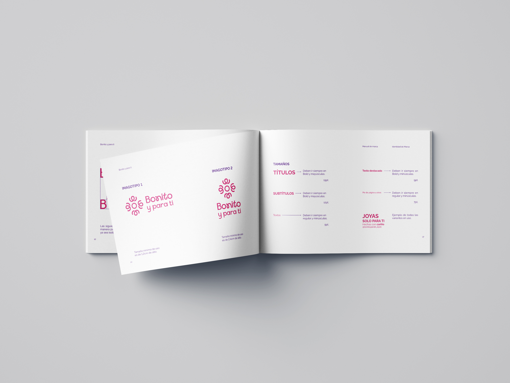
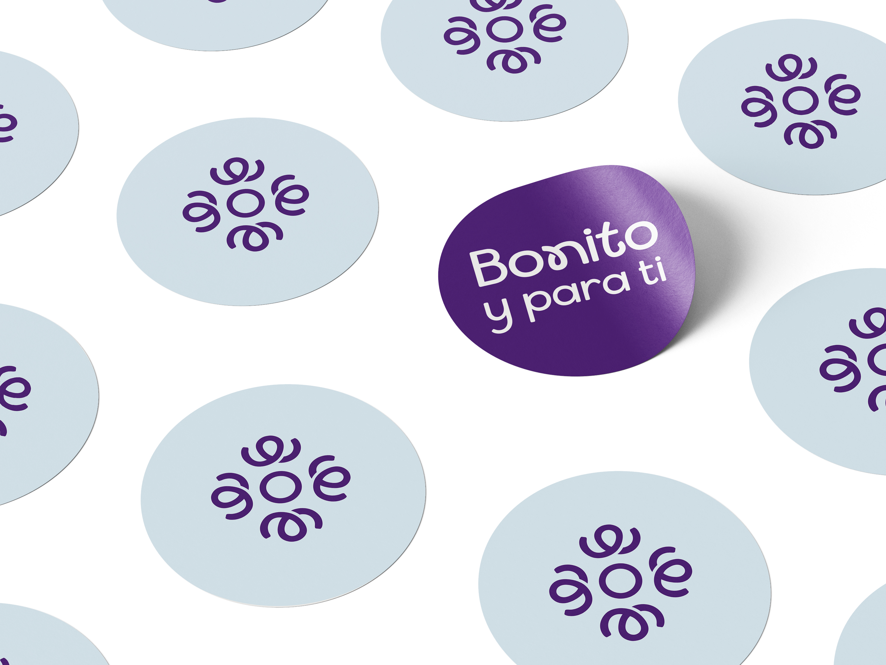
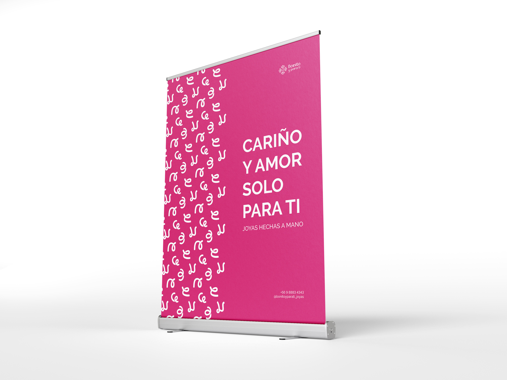
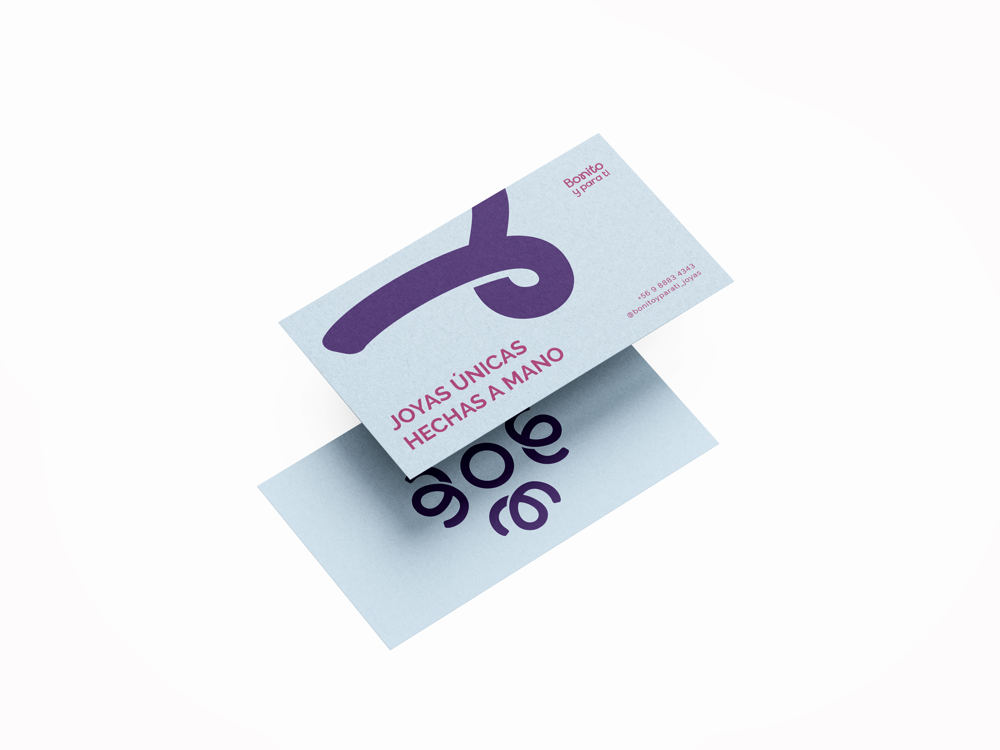
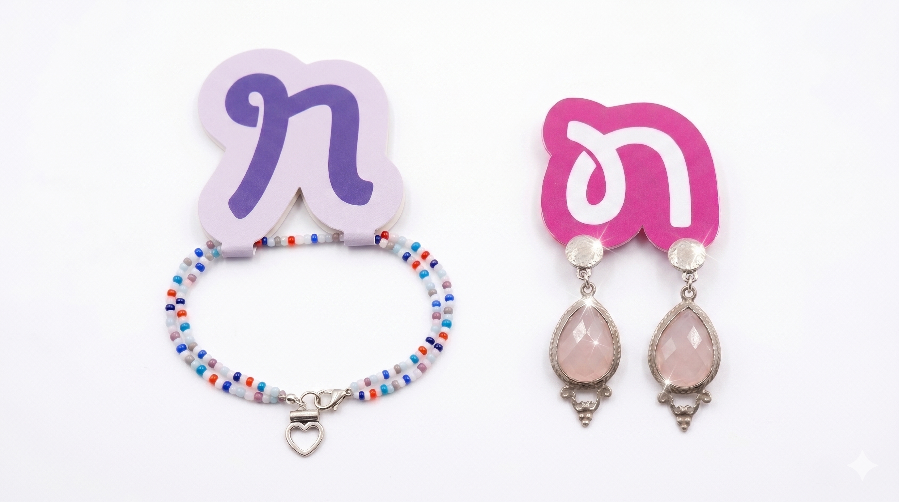
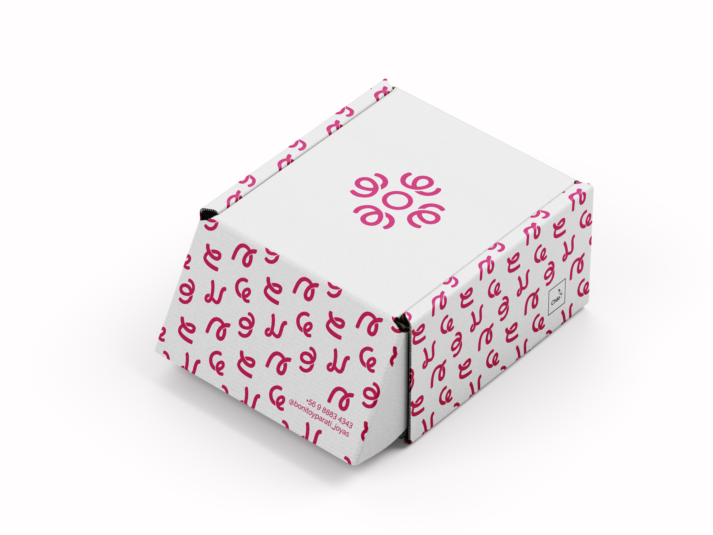

JoyasBonito yPara ti
“Bonito para ti” es una tienda de joyería con un fuerte componente emocional, artesanal y personalizado, fundado por Roxana Flores, una orfebre apasionada. Más allá de vender joyas, su propósito está en crear piezas únicas que conecten emocional y espiritualmente con quienes las usan, poniendo amor y atención en cada detalle del proceso.
La marca ofrece joyas únicas, hechas con amor, que conectan con las emociones y la energía personal de cada cliente. Busca entregar piezas significativas más allá de lo estético, integrando la funcionalidad, la espiritualidad y la personalización.
La marca se expresa con un tono suave, amoroso, artístico y cercano. Comunica con calidez y sensibilidad, reflejando la personalidad de Roxana, su creadora. Su voz es empática, auténtica y acogedora.





